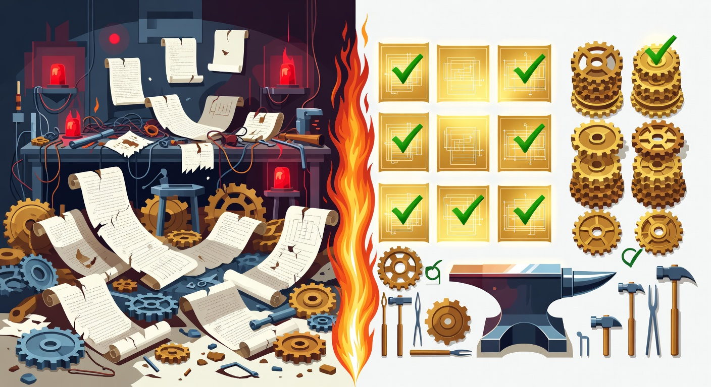

The A/B Test: 99 vs 44 — Same App, Same Model, Same Time

Director @ Microsoft

We built the same .NET application twice. Same requirements. Same model. Same machine. Same day. The only variable was whether the AI had guardrails.
The results weren't close.
The Setup
Both projects started from an identical .NET 10 WebAPI skeleton — the same git commit, the same empty solution. The requirements were identical: Clients CRUD → Projects CRUD → Invoice Engine with rate tiers, volume discounts, tax calculation, and banker's rounding. Both runs used Claude Opus 4.6. Same machine, same afternoon.
The only difference:
- Run A had Plan Forge v2.22.1 installed — guardrails, Temper Guards, instruction files, the full pipeline.
- Run B had nothing. A blank project and a prompt. Pure vibe coding.
Both runs were given the same natural language description of the application. No tricks, no handicapping. Just: "build this app."
The Numbers
Here's what each run produced:
| Metric | Plan Forge (A) | Vibe Coding (B) |
|---|---|---|
| Duration | ~7 min | ~8 min |
| Tests | 60 | 13 |
| Interfaces | 6 | 0 |
| DTOs | 9 | 0 |
| Typed exceptions | 4 | 0 |
| Error middleware | ProblemDetails (RFC 7807) | None |
| Banker's rounding | 5 usages | 0 |
| CancellationToken | 79 references | 0 |
| .gitignore | Present | Missing |
| Quality Score | 99/100 | 44/100 |
Read that last row again. Same model. Same requirements. Same time budget. 99 vs 44.
Head-to-Head Comparison
What Plan Forge Produced That Vibe Coding Didn't
The Plan Forge run didn't just produce more code — it produced the right code. The architectural decisions that separate production software from a prototype:
- 3-layer architecture (Controller → Service → Repository) vs a flat 2-layer structure where controllers called EF Core directly
- Interfaces for every service and repository — dependency injection works, mocking works, testing works
- DTOs at the API boundary — mass assignment protection, clean contracts, no entity leakage
- 4 typed exceptions with ProblemDetails middleware —
NotFoundException,DuplicateException,ValidationException,BusinessRuleException— all mapped to proper HTTP status codes via RFC 7807 - Banker's rounding (
MidpointRounding.ToEven) on all financial calculations — the requirement that was explicitly stated but silently dropped by the vibe run - CancellationToken on every async method — 79 references throughout the codebase, enabling graceful shutdown and request cancellation
- 60 tests covering rate tiers, discount brackets, state machine transitions, boundary values, and error cases
- A proper .gitignore — a small thing that speaks volumes about process discipline
What Went Wrong in the Vibe Coding Run
The vibe-coded version wasn't just missing features. It had active problems that would block production deployment:
- 12 build errors on first attempt. The model configured EF Core decimal precision in a way that's incompatible with the InMemory provider. The fix? It removed the decimal precision configuration entirely — silently violating the banker's rounding requirement to make the build pass.
- No interfaces. Every service is a concrete class. You can't mock them. You can't test the controller without spinning up the full dependency chain. Unit testing is structurally impossible.
- Entities exposed directly as API responses. No DTOs, no mapping layer. Change a database column and your API contract breaks. Add a sensitive field and it leaks to every consumer.
- Generic exception catching in controllers. Every endpoint wraps its body in
try { ... } catch (Exception ex) { return StatusCode(500, ex.Message); }. No typed exceptions, no ProblemDetails, no distinction between a validation error and a server crash. - All 13 tests in a single file. No test organization, no test categories, no separation between unit and integration tests.
- bin/ and obj/ folders committed to git. 111 files in the initial commit that should never be in source control. No .gitignore was generated.
To be clear: the vibe-coded version works. You can start it, call the endpoints, and get responses. But "it works" and "it's ready for production" are very different statements.
The Surprise: Time Was the Same
This is the part that challenges the common assumption about guardrails.
The conventional wisdom is that structure slows you down. More rules, more process, more overhead. Skip the architecture, skip the tests, ship faster. That's the entire appeal of vibe coding — remove friction, let the model rip.
But the numbers tell a different story: Plan Forge produced 4.6× more tests and a 2.25× higher quality score in less time (7 minutes vs 8 minutes). The guardrails didn't add overhead. They prevented the rework loop.
The vibe run spent its extra minute fighting build errors — the EF Core InMemory incompatibility that caused 12 compilation failures. The model had to diagnose the problem, backtrack, and apply a fix that sacrificed a requirement. That rework cycle is invisible in a demo but devastating at scale.
Guardrails don't slow you down. Rework slows you down. Guardrails prevent rework.
Under the Hood: What Each Run Actually Produced
Numbers tell part of the story. The codebase structure tells the rest.
Controllers/
ClientsController.cs
ProjectsController.cs
InvoicesController.cs
Middleware/
ExceptionHandlingMiddleware.cs
Repositories/
InMemoryClientRepository.cs
InMemoryProjectRepository.cs
InMemoryInvoiceRepository.cs
DTOs/
ClientDtos.cs
ProjectDtos.cs
InvoiceDtos.cs
Interfaces/
IClientService.cs IClientRepository.cs
IProjectService.cs IProjectRepository.cs
IInvoiceService.cs IInvoiceRepository.cs
Services/
ClientService.cs
ProjectService.cs
InvoiceService.cs
RateCalculator.cs
Entities/
Client.cs Project.cs Invoice.cs
Exceptions/
DomainExceptions.csControllers/
ClientsController.cs
ProjectsController.cs
InvoicesController.cs
Data/
TimeTrackerDbContext.cs
Services/
ClientService.cs
ProjectService.cs
InvoiceService.cs
Models/
Client.cs
Project.cs
Invoice.cs
TimeEntry.cs
❌ No Interfaces/
❌ No DTOs/
❌ No Repositories/
❌ No Middleware/
❌ No Exceptions/Test summary: total: 60, failed: 0, succeeded: 60, skipped: 0
Test Files:
✅ ClientServiceTests.cs (10 tests)
✅ ProjectServiceTests.cs ( 7 tests)
✅ InvoiceServiceTests.cs (20 tests)
✅ RateCalculatorTests.cs (18 tests)
✅ ClientsIntegrationTests.cs ( 5 tests)Test summary: total: 13, failed: 0, succeeded: 13, skipped: 0
Test Files:
⚠️ TimeTrackerTests.cs (13 tests)
(all tests in one file)
❌ No rate tier tests
❌ No integration tests
❌ No boundary value tests
❌ No state machine testsBoth Repos Are Public
We're not asking you to trust a blog post. Both repositories are public — fork them, run the scoring yourself, read every line of code.
- Plan Forge run: github.com/srnichols/ab-test-planforge
- Vibe coding run: github.com/srnichols/ab-test-vibecode
Same starting point. Same model. Same day. Different guardrails. Different outcomes.
Scoring Breakdown
The 99/100 and 44/100 scores come from a weighted rubric across seven dimensions. Here's the full breakdown:
| Category | Weight | Plan Forge (A) | Vibe Coding (B) |
|---|---|---|---|
| Functional Completeness | 25% | 25/25 | 15/25 |
| Architecture | 20% | 20/20 | 8/20 |
| Testing | 20% | 20/20 | 6/20 |
| Error Handling | 10% | 10/10 | 3/10 |
| Security & Validation | 10% | 10/10 | 4/10 |
| Precision (Banker's Rounding) | 10% | 10/10 | 0/10 |
| Git Hygiene | 5% | 4/5 | 0/5 |
| Total | 100% | 99/100 | 44/100 |
The vibe run's only competitive category was Functional Completeness — it built most of the CRUD endpoints. But "most" isn't "all." The missing banker's rounding scored a flat zero in Precision. The missing .gitignore and committed build artifacts scored zero in Git Hygiene. No interfaces and no layered architecture capped Architecture at 8/20.
Quality Scoring by Dimension
Conclusion
Speed was comparable. Quality was not.
The value proposition of Plan Forge isn't that it makes you faster — though in this test, it did. The value is that it makes the first pass the right pass.
The vibe-coded version would need substantial rework to reach production quality: add interfaces, extract DTOs, implement proper error handling, restore banker's rounding, add CancellationToken support, write 47 more tests, add a .gitignore, and clean up the committed build artifacts. That's not a polish pass — that's a rewrite of the architecture.
The Plan Forge version ships as-is.
Not because the model is smarter with guardrails. It's the same model. But with Plan Forge, the model has context about what good looks like — architecture principles, Temper Guards that catch common shortcuts, instruction files that encode best practices, and a pipeline that validates at every boundary. The model's capability doesn't change. Its direction does.
Try it yourself: github.com/srnichols/plan-forge